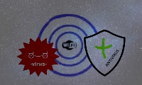

Reconocer la importancia de identificar los recursos necesarios para obtener una seguridad en nuestro sistema informático, tanto en el hardware como en el Software, al tener conocimiento de la terminología utilizada, permite al estudiante conocer sobre los procedimientos para minimizar la variedad de tipos de amenaza.
Abordar los conceptos de Software malicioso y antivirus, así como su clasificación, y los protocolos generales en la seguridad de redes inalámbricas.
Proporcionar de manera superficial una descripción del concepto de criptografía
OBJETIVO ESPECIFICO 1
Terminología y conceptos básicos de seguridad informática
Identificar y conocer la terminología utilizada en la seguridad informática, así mismo sus conceptos básicos de seguridad.
Se divide en dos:
1. Amenazas de Seguridad
a) Interrupción
b) Intercepción
c) Modificación
d) Fabricación
2. Ataques Informaticos
a) Ataques pasivos
b) Ataques activos
OBJETIVO ESPECIFICO 2
Malware – Antivirus & Redes Inalambricas

Los temas que se trataran en en este objetivo son:
1) Concepto de software malicioso & Concepto de Software antivirus
2) Ciclo de vida de un virus & Clasificación de malware